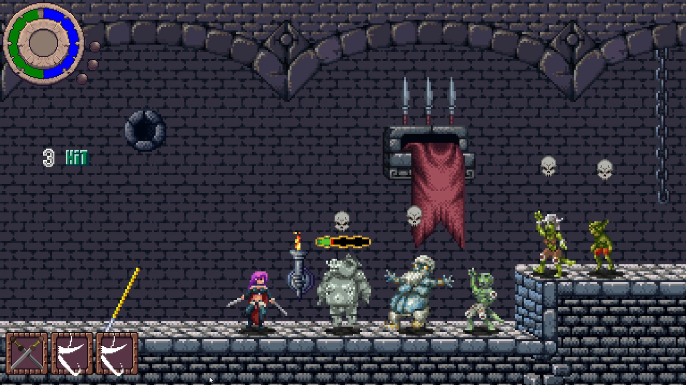
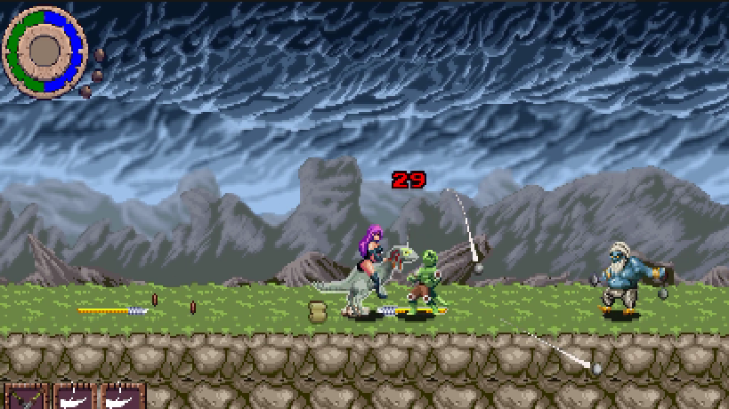

Ultimas actualizaciones del juego
Actualizacion de Junio
A petición de mi amigo @Stonepuppeteer que me ha proporcionado los sprites de los enemigos convertidos en estatua, hice este nuevo objeto que transforma a todos en estatuas.
Nueva montura
Tras las peticiones llega una nueva montura al mundo de Valeria, especial para los fanaticos de Jurassic Park
Magia de rayos implementada
Cambié sprites relámpago que funcionaban casi como una línea recta en código gracias al desarrollador 1up Indie, alguien de quien aprendí mucho y con quien tengo estoy en contacto constantemente. Quienes se están iniciando en Game Maker aprenderán mucho con sus videos